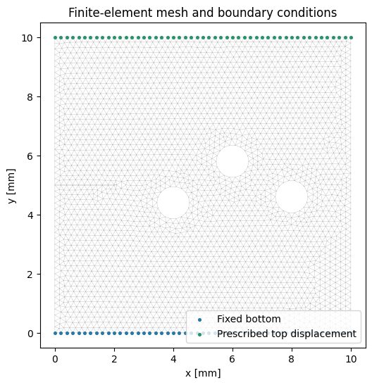
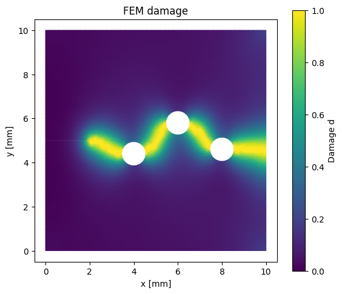
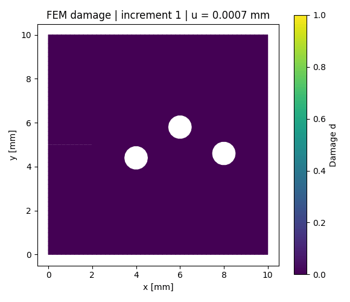
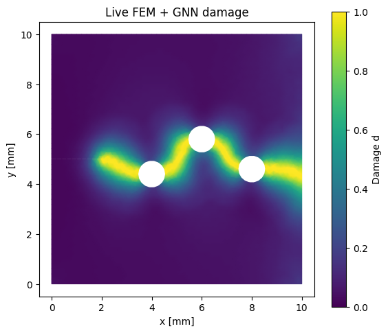
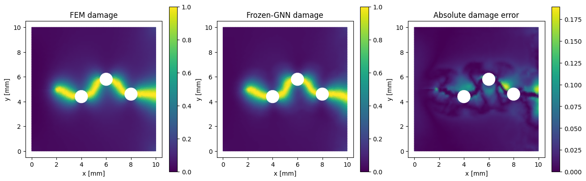
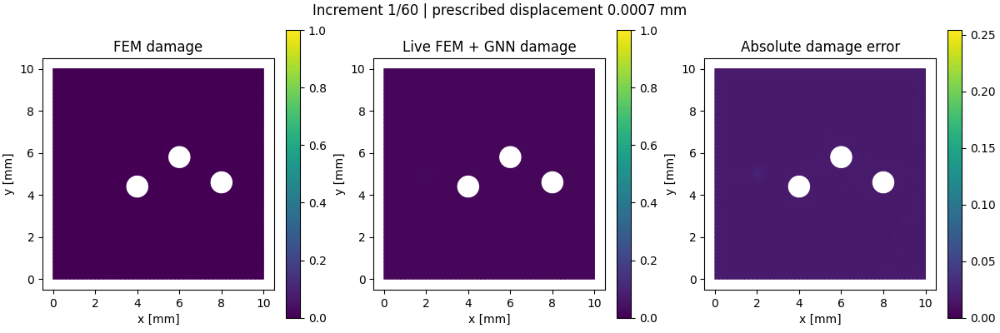
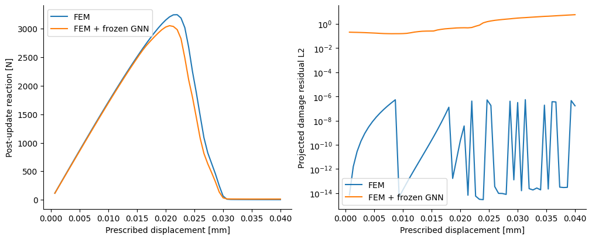
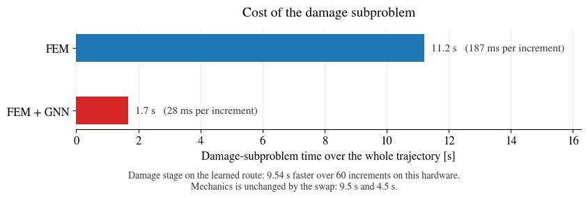
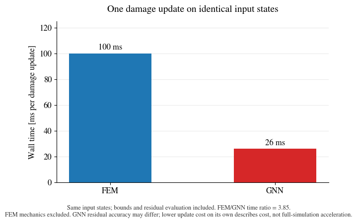

NB3 — Hybrid FEM+DL with PhAST#
PhAST laboratory: fracture around three holes#
Replacing the damage subproblem with a trained network#
UKACM Autumn School 2026 · 16 September
Developed by Allamaprabhu Ani and Sathiskumar A. Ponnusami,
CEMS-Lab,
City St George’s, University of London
Queen Mary University of London
PhAST repository · PhAST documentation
In this laboratory, we solve one fracture problem twice. First, finite elements calculate both displacement and damage. Second, finite elements still calculate displacement, but a frozen graph neural network predicts each damage update. We compare the evolving fields, reactions, residuals and computational cost.
Learning objectives#
By the end of the laboratory, you should be able to:
Construct a geometry, generate a mesh and prescribe material and loading data.
Explain the mechanics–history–damage sequence in a staggered calculation.
Identify the graph inputs and the nodal damage prediction.
Distinguish field accuracy, equation residual and computational cost.
Measure damage-update cost without confusing it with complete simulation time.
Day 3 · PhAST practical. Updated 16 September 2026. Select a GPU runtime in Colab. The setup downloads phast_gnn_assets.zip automatically and verifies its source and checkpoint hashes. Figures and animations are retained from the supplied notebook; fresh whole-notebook timing remains to be recorded.
# 1. Colab: select a GPU before execution
# Choose **Runtime → Change runtime type → GPU**, then connect.
# Python cannot allocate a GPU by installing PyTorch or setting a variable.
# Colab normally includes PyTorch; we preserve that CUDA installation.
# Official guidance: https://docs.pytorch.org/tutorials/beginner/colab
#
# Mechanics and the rational damage solver's sparse Newton factorization use
# CPU SciPy in this teaching implementation. The GNN can use the GPU. Moving
# a tensor to CUDA does not turn that sparse backend into a GPU solver.
import os
import sys
import subprocess
import importlib.util
from pathlib import Path
try:
IN_COLAB = importlib.util.find_spec("google.colab") is not None
except ModuleNotFoundError:
IN_COLAB = False
if IN_COLAB:
# Gmsh's Linux wheel needs the OpenGL utility library even without a GUI.
subprocess.run(["apt-get", "-qq", "update"], check=True)
subprocess.run(["apt-get", "-qq", "install", "-y", "libglu1-mesa"], check=True)
subprocess.run([sys.executable, "-m", "pip", "-q", "install",
"gmsh==4.13.1", "meshio==5.3.5", "scipy", "matplotlib",
"numpy", "networkx", "tqdm", "pyyaml", "h5py", "pillow"], check=True)
if importlib.util.find_spec("torch") is None:
subprocess.run([sys.executable, "-m", "pip", "install", "torch"], check=True)
import torch
DEVICE = "cuda" if torch.cuda.is_available() else "cpu"
print("PyTorch:", torch.__version__, "| GNN device:", DEVICE)
if DEVICE == "cuda":
name = torch.cuda.get_device_name(0)
capability = torch.cuda.get_device_capability(0)
memory = torch.cuda.get_device_properties(0).total_memory / 1024**3
print(f"GPU: {name} | compute capability {capability[0]}.{capability[1]} "
f"| {memory:.1f} GiB")
# The network runs in float32, so this GPU's float64 throughput does not
# apply. That matters on a T4, whose float64 rate is 1/32 of its float32.
print("Network precision: float32 (the FEM interface stays float64)")
else:
print("CPU-only execution is supported; GPU speedup is not implied.")
# Keep CPU thread allocation identical for both simulations.
THREADS = min(2, os.cpu_count() or 1)
torch.set_num_threads(THREADS)
REQUIRE_GPU = True
if REQUIRE_GPU and not torch.cuda.is_available():
raise RuntimeError("Select a GPU in Colab runtime settings, reconnect, and restart this notebook. Set REQUIRE_GPU=False only for an intentional CPU exercise.")
PyTorch: 2.11.0+cu128 | GNN device: cuda
GPU: Tesla T4 | compute capability 7.5 | 14.6 GiB
Network precision: float32 (the FEM interface stays float64)
2. Load the source and frozen weights#
The setup downloads phast_gnn_assets.zip automatically. You can also download the archive and place it beside the notebook.
# 2. Make the original PhAST source available
# Upload `phast_gnn_assets.zip` when prompted. No HPC account is required.
# The archive includes the original Python source and the frozen checkpoint,
# not a newly trained model. Source hashes are checked before imports; the
# checkpoint hash is checked before the original loader deserializes it.
# Use the supplied source/checkpoint archive.
import zipfile
import hashlib
import json
# Set ASSETS_URL to a direct download link for phast_gnn_assets.zip and the
# archive is fetched automatically, which avoids every student uploading the
# same 3 MB file by hand on every fresh runtime. Leave it empty to be prompted.
# Whatever arrives is still verified against the manifest hashes below, so a
# download is no less checked than an upload.
ASSETS_URL = "https://cems-lab.github.io/autumn-school/datasets/phast/phast_gnn_assets.zip"
HERE = Path(__file__).resolve().parent if "__file__" in globals() else Path.cwd()
ARCHIVE = HERE / "phast_gnn_assets.zip"
WORK = HERE / "phast_demo_work"
if not ARCHIVE.exists() and ASSETS_URL:
import urllib.request
print("Downloading", ASSETS_URL)
urllib.request.urlretrieve(ASSETS_URL, ARCHIVE)
print(f"Retrieved {ARCHIVE.stat().st_size / 1024:.0f} kB")
if not ARCHIVE.exists():
for candidate in (Path("phast_gnn_assets.zip"),
Path("/content/drive/MyDrive/phast_gnn_assets.zip")):
if candidate.exists():
ARCHIVE = candidate
print("Using the archive found at", candidate)
break
if not ARCHIVE.exists() and IN_COLAB:
from google.colab import files
print("Select phast_gnn_assets.zip")
files.upload()
ARCHIVE = Path.cwd() / "phast_gnn_assets.zip"
if not ARCHIVE.exists():
raise FileNotFoundError(
"phast_gnn_assets.zip was not found. Set ASSETS_URL to a download link, "
"place the archive beside this notebook, or upload it when prompted.")
WORK.mkdir(exist_ok=True)
with zipfile.ZipFile(ARCHIVE) as archive:
# Reject paths outside the extraction folder.
for item in archive.infolist():
if not (WORK / item.filename).resolve().is_relative_to(WORK.resolve()):
raise ValueError("Unsafe archive member")
archive.extractall(WORK)
ASSETS = WORK / "assets"
manifest = json.loads((ASSETS / "manifest.json").read_text())
def sha256(path):
return hashlib.sha256(Path(path).read_bytes()).hexdigest()
for name, expected in manifest["sha256"].items():
assert sha256(ASSETS / name) == expected, f"File hash mismatch: {name}"
CHECKPOINT = ASSETS / "moon_pi_dd.pt"
CHECKPOINT_SHA = "953b29a05cc622b36e6174c713612b994c412263d84c0010505300cceb953cc1"
assert sha256(CHECKPOINT) == CHECKPOINT_SHA
# Install this exact PhAST snapshot into the interpreter's import search path.
# We do not substitute a similarly named package from PyPI.
sys.path[:0] = [str(ASSETS / "source" / "src"), str(ASSETS / "source"), str(ASSETS)]
print("Verified source files:", len(manifest["sha256"]))
# Geometry transfer with a frozen model
# The plate is 10 x 10 mm, with a horizontal edge slot of length 2 mm at y=5.
# Three holes have radius 0.55 mm and centres (4,4.4), (6,5.8), (8,4.6) mm.
# These are geometric voids with traction-free boundaries, not imposed damage.
# The checkpoint was trained on the inclined-slot specimen. Here its
# weights remain frozen: this is a geometry-transfer experiment. The original
# rational material law is retained; this is not the separate Radius-GNO study.
# The mesh size remains 0.2 mm and the regularisation length remains 0.4 mm.
# PHAST_DEMO_STEPS may be set for a short installation test only.
import time
import numpy as np
import matplotlib.pyplot as plt
import matplotlib.tri as mtri
from scripts.paper4.run_moon_full_fem_baseline import (
BaselineConfig, FEMMesh, Material,
BoundaryConditions, SolverConfig, StaggeredSolver, _node_sets,
)
from scripts.paper4.live_quasistatic_replacement import (
build_live_adapter, moon_boundary_context,
)
from phast.solvers.damage_solver import damage_kkt_metrics
from arithmetic import count_call
from tqdm.auto import tqdm
from matplotlib.animation import FuncAnimation, PillowWriter
%matplotlib inline
# QUICK_TEST shortens the run for a first hardware check on a new GPU.
# Read the DAMAGE-UPDATE TIME RATIO in Section 16 for the hardware question:
# it replays identical states with a warm-up and CUDA synchronisation, so it is
# meaningful at any run length. The cumulative saving in Section 15 scales with
# the number of increments and is not comparable across different N_STEPS.
QUICK_TEST = True
N_STEPS = int(os.environ.get("PHAST_DEMO_STEPS", "60" if QUICK_TEST else "500"))
FINAL_DISPLACEMENT = 0.04 # mm; each route uses the same loading schedule
OUTPUT = WORK / "results_three_hole_classroom"
OUTPUT.mkdir(exist_ok=True)
Downloading https://cems-lab.github.io/autumn-school/datasets/phast/phast_gnn_assets.zip
Retrieved 3105 kB
Verified source files: 262
3. Define the geometry and generate the mesh#
Quantity |
Value |
|---|---|
Plate |
10 × 10 mm |
Horizontal edge slot |
Length 2 mm, centred at y = 5 mm; width 0.02 mm |
Hole centres [mm] |
(4, 4.4), (6, 5.8), (8, 4.6) |
Hole radius |
0.55 mm |
Characteristic mesh size |
0.2 mm |
Elements |
Three-node triangles |
Gmsh subtracts the slot and holes from the plate before meshing.
These voids are part of the geometry: their interiors contain no material or finite elements. Generate the mesh once so both simulations use identical nodes and elements. The mesh and boundary-condition plot appears in Section 5.
# 3. Define or load the geometry, then generate the finite-element mesh.
# Construct the established three-hole steering geometry directly with Gmsh.
# The mesh is generated once and shared by the independent FEM and GNN runs.
import gmsh
HOLE_CENTRES = ((4.0, 4.4), (6.0, 5.8), (8.0, 4.6))
HOLE_RADIUS = 0.55
SLOT_WIDTH = 0.02
config = BaselineConfig(out_dir=OUTPUT, case="three_hole", num_steps=N_STEPS,
mesh_size=0.2, length_scale=0.4,
final_displacement=FINAL_DISPLACEMENT, history_order="fresh")
torch.manual_seed(config.seed)
np.random.seed(config.seed % (2**32-1))
mesh_path = OUTPUT / "specimen.msh"
def generate_three_hole_mesh(path: Path) -> None:
"""Mesh a square minus the horizontal edge slot and three circular voids."""
if gmsh.isInitialized():
gmsh.finalize()
gmsh.initialize()
try:
gmsh.option.setNumber("General.Verbosity", 2)
gmsh.model.add("three_hole_steering")
occ = gmsh.model.occ
plate = occ.addRectangle(0., 0., 0., 10., 10.)
slot = occ.addRectangle(-SLOT_WIDTH, 5.-SLOT_WIDTH/2, 0.,
2.+SLOT_WIDTH, SLOT_WIDTH)
holes = [(2, occ.addDisk(x, y, 0., HOLE_RADIUS, HOLE_RADIUS))
for x, y in HOLE_CENTRES]
cut, _ = occ.cut([(2, plate)], [(2, slot)] + holes,
removeObject=True, removeTool=True)
occ.synchronize()
surfaces = [tag for dim, tag in cut if dim == 2]
if len(surfaces) != 1:
raise RuntimeError("Expected one connected plate surface")
gmsh.model.addPhysicalGroup(2, surfaces, name="plate")
gmsh.model.mesh.setSize(gmsh.model.getEntities(0), config.mesh_size)
gmsh.option.setNumber("Mesh.MeshSizeFromCurvature", 0)
gmsh.option.setNumber("Mesh.MeshSizeExtendFromBoundary", 0)
gmsh.option.setNumber("Mesh.MeshSizeMin", SLOT_WIDTH)
gmsh.option.setNumber("Mesh.MeshSizeMax", config.mesh_size)
gmsh.option.setNumber("Mesh.Algorithm", 6)
gmsh.model.mesh.generate(2)
gmsh.option.setNumber("Mesh.MshFileVersion", 2.2)
gmsh.write(str(path))
finally:
gmsh.finalize()
generate_three_hole_mesh(mesh_path)
mesh = FEMMesh(str(mesh_path), device="cpu", dtype=torch.float64)
bottom, top = _node_sets(mesh)
nodes = mesh.nodes.numpy()
elements = mesh.elements.numpy()
tri = mtri.Triangulation(nodes[:, 0], nodes[:, 1], elements)
[FEMMesh] Loading mesh: /content/phast_demo_work/results_three_hole_classroom/specimen.msh
[FEMMesh] Mesh file read OK
[FEMMesh] 3009 nodes loaded
[FEMMesh] 5747 T3 elements loaded
[FEMMesh] Node sets: []
[FEMMesh] Precomputing areas, grad_phi, incircle, lumped mass...
[FEMMesh] Precompute done: h_min=1.782349e-02, total_area=97.166550
4. Specify the material#
We use millimetres, newtons and MPa. The elastic modulus is 210,000 MPa, Poisson’s ratio is 0.3, fracture energy is 2.7 N/mm and the phase-field length is 0.4 mm. The retained implementation uses plane-stress spectral elasticity and the checkpoint’s rational degradation law:
Here \(d=0\) denotes intact material and \(d=1\) denotes fully damaged material. The same material formulation is used in both routes. Changing the law would change the problem seen by the frozen model.
# 4. Apply material properties.
# The original rational AT2 model is retained, including its reduced-2D
# plane-stress spectral approximation. Units are mm, N and MPa.
material = Material(
E=210000., nu=0.3, Gc=2.7, l0=0.4, rho=7.8e-9,
eta_residual=1e-7, energy_split="spectral", stress_degradation="full",
pf_model="AT2", degradation_type="moon_rational", plane_stress=True,
)
5. Apply boundary conditions and loading#
Fix both displacement components on the bottom boundary. On the top boundary, fix horizontal displacement and increase vertical displacement to 0.04 mm over 500 increments. The slot and hole boundaries are traction-free. No damage Dirichlet value is prescribed on their surfaces.
# 5. Apply boundary conditions and the prescribed load.
# The geometric slot is traction-free. No damage value is imposed on it.
# The bottom is fixed; the top cannot move horizontally and is displaced
# vertically to FINAL_DISPLACEMENT through N_STEPS equal load increments.
def apply_boundary_conditions():
bcs = BoundaryConditions(mesh.n_nodes, mesh.device, mesh.dtype)
bcs.fix(bottom, 0).fix(bottom, 1)
bcs.fix(top, 0).add(top, 1, FINAL_DISPLACEMENT)
return bcs
boundary_conditions = apply_boundary_conditions()
fig, ax = plt.subplots(figsize=(6, 6))
ax.triplot(tri, lw=0.25, color="0.7")
ax.scatter(nodes[bottom, 0], nodes[bottom, 1], s=7, color="#2878A8", label="Fixed bottom")
ax.scatter(nodes[top, 0], nodes[top, 1], s=7, color="#29936B", label="Prescribed top displacement")
ax.set(xlabel="x [mm]", ylabel="y [mm]", title="Finite-element mesh and boundary conditions", aspect="equal")
ax.legend(loc="lower right")
fig.savefig(OUTPUT / "mesh_and_boundary_conditions.png", dpi=180)
plt.show()

Exercise 1 — Inspect the model#
Locate the horizontal slot and all three holes. Which boundaries carry prescribed displacement, and which are traction-free? Explain why prescribing damage on a hole is a different model.
Your observations:
Write your answer here.
Hint
The hole is absent material; its boundary is not a set of nodes that must have damage equal to one.
6. Choose the solution procedure#
This is an implicit, quasi-static calculation. Inertia is neglected. The 500 increments describe the loading schedule; they are not dynamic time steps. Each increment contains one mechanics solve followed by one damage update. Each conventional subsolver has its own internal iterations.
We retain this one-pass staggered procedure to match the tested teaching example. It is not an outer staggered iteration continued until coupled mechanics and damage convergence at every increment.
# 6. Select the analysis and solver settings.
# This example is quasi-static: inertia is neglected and mechanical equilibrium
# is solved implicitly at each load increment. N_STEPS counts load increments,
# not explicit dynamic time steps.
# Dynamic/explicit analyses need mass, physical time-step and stability choices;
# the frozen model's present demonstration uses the quasi-static setting.
ANALYSIS = "quasi_static"
MECHANICS_UPDATE = "implicit"
COUPLING = "one_pass_staggered"
MECHANICS_BACKEND = "scipy"
if (ANALYSIS, MECHANICS_UPDATE, COUPLING) != (
"quasi_static", "implicit", "one_pass_staggered"):
raise ValueError("This frozen-model example is validated for implicit quasi-static, one-pass staggered coupling.")
settings = SolverConfig(
solver_type=ANALYSIS, num_steps=N_STEPS,
static_tol=1e-8, static_max_iter=60,
damage_tol=1e-8, damage_max_iter=1000,
bounds_method="projected_cg", use_multigrid=False,
preconditioner="jacobi", backend=MECHANICS_BACKEND,
newton_line_search=True, fail_on_mechanics_nonconvergence=True,
)
def new_solver():
# Each simulation receives fresh displacement, history, damage and BC state.
return StaggeredSolver(mesh, material, apply_boundary_conditions(), settings)
7. Read the solver loop#
At increment \(n\), both routes follow the same sequence:
Solve mechanical equilibrium using the previous damage field.
Update the maximum-history driving quantity.
Calculate damage with FEM, or predict it with the frozen GNN.
Enforce damage bounds, evaluate the assembled residual and advance.
Irreversibility requires \(\mathbf d_n\ge\mathbf d_{n-1}\). We impose this with projection onto \([\mathbf d_{n-1},1]\). The GNN residual is measured, not followed by an FEM damage correction. The two routes begin from independent initial states; the learned route never receives the reference FEM damage trajectory.
Where the damage subproblem is replaced#
The whole exercise turns on a single branch in the function below, so it is worth reading before the code.
damage_update() performs step (c) of the loop. Its adapter argument selects
who answers:
|
What computes the damage field |
|---|---|
|
|
the predictor |
|
On the learned route the network’s output is the damage field for that increment, and it feeds directly into the next mechanics solve.
Everything else in the function is shared by both routes: the projection onto \([\mathbf d_{n-1}, 1]\) that enforces irreversibility, the phase-field Dirichlet conditions, the finiteness check, and the residual measurement. Mechanics, geometry, mesh, material and loading are untouched.
And the choice is made by one argument at the call site:
fem_result = simulate() # Section 8 — conventional
gnn_result = simulate(adapter) # Section 11 — learned damage
The assembled residual is measured on both routes and reported alongside the fields, so you can read how well each damage field satisfies the damage equation. The field you see is the one that route produced.
What adapter.propose() receives and returns#
damage, diagnostics = adapter.propose(history_elem, damage_previous)
It is handed exactly the two quantities the finite-element damage solve uses: the element history field and the previously accepted nodal damage. It returns one damage value per node, on the same node indices, plus a diagnostics dictionary carrying the inference time.
# 7. Define the staggered operations.
# For each load increment:
# (a) solve solid-mechanics equilibrium using the previous damage;
# (b) update the maximum-history driving quantity;
# (c) solve damage, or predict damage with the frozen network;
# (d) apply bounds, evaluate the residual and advance the load state.
# One mechanics update followed by one damage update is the retained coupling.
# The mechanics and damage solvers have their own internal iterations.
def synchronize():
if DEVICE == "cuda":
torch.cuda.synchronize()
def damage_update(solver, history, previous, adapter=None):
"""One update including projection and residual evaluation; no mechanics."""
solver.H_elem = history
solver.d = previous.clone()
# =================================================================
# THE DAMAGE SUBPROBLEM.
# This branch is the only place where the two routes differ at all.
# =================================================================
if adapter is None:
# ROUTE A, conventional: finite elements solve the damage equation.
solver.step_solve_damage(d_prev_step=previous)
if not solver.damage_solver.last_converged:
raise RuntimeError("FEM damage solver did not converge")
else:
# ROUTE B, learned: the trained network returns the damage field, and
# its output becomes the damage for this increment.
# Inference reads the current hybrid history of this run.
candidate, _ = adapter.propose(history, previous)
solver.d = candidate.to(device=mesh.device, dtype=mesh.dtype)
# ============ everything below here is shared by both ============
solver.d = torch.maximum(solver.d, previous).clamp_max(1.)
solver._apply_pf_dirichlet()
if not bool(torch.isfinite(solver.d).all()):
raise RuntimeError("Non-finite damage")
residual = solver.damage_solver.compute_residual(history, solver.d)
measures = damage_kkt_metrics(residual, solver.d, previous)
# We measure residuals but do not replace a rejected GNN result with FEM.
# Bounds alone do not establish satisfaction of the damage equation.
return solver.d, measures
def simulate(adapter=None):
solver = new_solver() # independent state for each route
history_rows, fields, replay_states = [], [], []
selected = set(np.linspace(1, N_STEPS, min(4, N_STEPS), dtype=int))
start_total = time.perf_counter()
progress = tqdm(range(1, N_STEPS + 1),
desc="FEM solve" if adapter is None else "FEM + GNN solve",
unit="increment")
for step in progress:
solver.bcs.load_factor = step / N_STEPS
previous = solver.d.clone()
old_history = solver.H_elem.clone()
synchronize(); start = time.perf_counter()
solver.step_mechanics()
synchronize(); mechanics_time = time.perf_counter() - start
strain = solver.fem.compute_strain(solver.u)
drive = solver.fem.compute_driving_force(solver.u, strain=strain, d=previous)
history = torch.maximum(old_history, drive)
if step in selected and adapter is None:
replay_states.append((step, history.clone(), previous.clone()))
synchronize(); start = time.perf_counter()
damage, measures = damage_update(solver, history, previous, adapter)
synchronize(); damage_time = time.perf_counter() - start
solver.H_elem = history
solver.H_nodal = mesh.elem_to_node(history)
solver.advance_step()
reaction = solver.fem.compute_reaction_force(solver.u, solver.d, top, component=1)
history_rows.append(dict(step=step, displacement=FINAL_DISPLACEMENT*step/N_STEPS,
reaction=float(reaction), mechanics_s=mechanics_time,
damage_s=damage_time, residual_l2=float(measures["kkt_projected_l2"])))
fields.append(damage.detach().cpu().numpy().copy())
if step == 1 or step % max(1, N_STEPS//10) == 0:
progress.set_postfix(d_max=f"{float(damage.max()):.3f}",
residual=f"{float(measures['kkt_projected_l2']):.2e}")
synchronize()
return dict(rows=history_rows, fields=np.array(fields), replay=replay_states,
total_s=time.perf_counter()-start_total)
Exercise 2 — Follow the state#
In the code, identify the previous damage, current history and candidate damage. Which value ensures irreversibility? Where would an outer staggered convergence loop have to be added?
Your observations:
Write your answer here.
Hint
Trace previous, history, damage_update and torch.maximum. The present increment loop advances immediately after one pair of subsolves.
8. Run conventional FEM#
Execute the reference calculation first. The progress bar shows the current increment, maximum damage and projected residual. A conventional damage solve that fails to converge stops the calculation rather than producing a successful benchmark label. Retain the default 500 increments for the first comparison.
# 8. Solve the specimen using conventional FEM
# This is the numerical reference. No learned model is involved.
# No adapter is passed, so damage_update() takes ROUTE A and the damage
# equation is solved by finite elements at every increment.
fem_result = simulate()
[StaggeredSolver] Assembling solver (quasi_static)...
[FEMOperators] Initializing (spectral split, AT2)...
[FEMOperators] dt_CFL = 3.276809e-09 (c_p=5439282.93)
[PhaseFieldDamageSolver] Initializing CG solver (model=AT2, tol=1.0e-08, max_iter=1000, bounds=projected_cg)...
[PhaseFieldDamageSolver] CG device: cpu, dtype: float64
[PhaseFieldDamageSolver] Ready (preconditioner=jacobi).
[StaggeredSolver] QuasiStaticSolver ready
[StaggeredSolver] State allocated: 3009 nodes, 5747 elements, device=cpu, dtype=torch.float64
[QuasiStaticSolver] mechanics backend: scipy (SciPy SuperLU sparse-direct LU); tangent=frozen-state secant sparse tangent; free_dofs=5814
/content/phast_demo_work/assets/source/src/phast/core/fem_operators.py:974: RuntimeWarning: FEMOperators._psi_plus_spectral: spectral energy split is approximate under plane stress: this path is a reduced 2D in-plane strain-spectral projection, not a fully condensed 3D plane-stress spectral decomposition with damage-dependent out-of-plane strain. For validated production paths prefer plane-strain spectral or plane-stress Amor. Audit T1.4 (W4).
return self._psi_plus_spectral(strain)
9. Examine the FEM evolution#
The plot and GIF are generated from your calculation. Observe crack initiation, interaction with the first hole and propagation through the remaining ligament. The damage colour scale remains fixed from zero to one.
# 9. Visualise the FEM solution and save its evolution as a GIF.
# Damage is interpolated within each triangle from the FEM nodal values.
# Identical frame indices and damage colour limits are used for both routes.
GIF_FRAMES = 60
GIF_FPS = 8
def display_gif(path):
if IN_COLAB:
from IPython.display import display, Image
display(Image(filename=str(path)))
else:
print("Animation:", path)
def visualise_and_animate(result, label, filename):
fields = result["fields"]
fig, ax = plt.subplots(figsize=(5.8, 5))
artist = ax.tripcolor(tri, fields[-1], shading="gouraud",
cmap="viridis", vmin=0, vmax=1)
fig.colorbar(artist, ax=ax, label="Damage d")
ax.set(xlabel="x [mm]", ylabel="y [mm]", aspect="equal", title=label)
fig.tight_layout()
fig.savefig(OUTPUT / (filename + "_final.png"), dpi=180)
plt.show()
plt.close(fig)
indices = np.unique(np.linspace(0, len(fields)-1, min(GIF_FRAMES, len(fields)), dtype=int))
fig, ax = plt.subplots(figsize=(5.8, 5))
artist = ax.tripcolor(tri, fields[0], shading="gouraud",
cmap="viridis", vmin=0, vmax=1)
fig.colorbar(artist, ax=ax, label="Damage d")
ax.set(xlabel="x [mm]", ylabel="y [mm]", aspect="equal")
title = ax.set_title(label)
fig.tight_layout()
def update(index):
artist.set_array(fields[index])
displacement = result["rows"][index]["displacement"]
title.set_text(f"{label} | increment {index+1} | u = {displacement:.4f} mm")
return artist, title
animation = FuncAnimation(fig, update, frames=indices, blit=False)
path = OUTPUT / (filename + ".gif")
animation.save(path, writer=PillowWriter(fps=GIF_FPS), dpi=100)
plt.close(fig)
display_gif(path)
visualise_and_animate(fem_result, "FEM damage", "fem_damage")


Exercise 3 — Read the reference solution#
At what approximate prescribed displacement does a connected damaged region first reach the first hole? Record your observation and the frame used.
Your observations:
Write your answer here.
Hint
Use the displacement shown above the animation. State the damage threshold you use to identify a damaged region.
10. Load the frozen graph neural network#
Each finite-element vertex becomes one graph node. Triangle edges define graph connections in both directions; no image rasterisation is used.
Model component |
Information |
|---|---|
Node inputs |
Assembled history quantity and topological boundary indicator |
History transform |
\(\log_{10}(1+q_i)\), applied inside the network |
Edge input |
Edge length divided by phase-field length |
Encoder |
Maps inputs to 32-component latent vectors |
Processor |
Ten neighbour message-passing blocks |
Decoder |
One predicted damage value per node |
For homogeneous linear triangles, the history feature is assembled as \(q_i=\sum_{e\ni i}A_e H_e/(3G_c\ell)\). The boundary indicator includes the outer boundary, slot and hole boundaries. Predictions map back to the same FEM node indices, with \(d_h(\mathbf x)=\sum_i N_i(\mathbf x)d_i\) inside elements.
These weights were trained on an inclined-slot specimen. Applying them here is a frozen-weight geometry-transfer experiment. No optimiser is constructed.
# 10. Load the trained graph model
# Each FEM vertex becomes a graph node with the same node index. Triangle
# connectivity defines graph edges, represented in both directions.
#
# Node inputs: log10(1 + assembled history/(Gc ell)) and a topology-boundary
# indicator. The assembly includes element area and shape-function weights;
# it is not simply the history value at a point. The edge input is length/ell.
# The encoders produce 32-component latent vectors. Ten message-passing blocks
# update the graph, using degree-normalised mean aggregation. The decoder
# returns one damage scalar per node. There is no rasterisation or remeshing.
#
# No optimiser or training dataset is used here. Weights remain fixed.
adapter = build_live_adapter(
"literal_moon", checkpoint_path=CHECKPOINT,
checkpoint_sha256=CHECKPOINT_SHA, device=DEVICE,
nodes=nodes, elements=elements,
boundary_context=moon_boundary_context(nodes, elements),
Gc_elem=2.7, length_scale=0.4,
)
adapter.model.eval()
for parameter in adapter.model.parameters():
parameter.requires_grad_(False)
print(adapter.model)
print("Trainable parameters:", sum(p.numel() for p in adapter.model.parameters() if p.requires_grad))
print("Graph nodes:", len(nodes), "| directed edges:", adapter.edges.shape[1])
MoonGNNFEM(
(node_encoder): Sequential(
(0): Sequential(
(0): Linear(in_features=2, out_features=32, bias=True)
(1): ReLU()
(2): Linear(in_features=32, out_features=32, bias=True)
(3): ReLU()
(4): Linear(in_features=32, out_features=32, bias=True)
(5): ReLU()
(6): Linear(in_features=32, out_features=32, bias=True)
)
(1): LayerNorm((32,), eps=1e-05, elementwise_affine=True)
)
(edge_encoder): Sequential(
(0): Sequential(
(0): Linear(in_features=1, out_features=32, bias=True)
(1): ReLU()
(2): Linear(in_features=32, out_features=32, bias=True)
(3): ReLU()
(4): Linear(in_features=32, out_features=32, bias=True)
(5): ReLU()
(6): Linear(in_features=32, out_features=32, bias=True)
)
(1): LayerNorm((32,), eps=1e-05, elementwise_affine=True)
)
(processor): ModuleList(
(0-9): 10 x SymmetricProcessorBlock(
(edge_update): Sequential(
(0): Linear(in_features=96, out_features=32, bias=True)
(1): ReLU()
(2): Linear(in_features=32, out_features=32, bias=True)
(3): ReLU()
(4): Linear(in_features=32, out_features=32, bias=True)
(5): ReLU()
(6): Linear(in_features=32, out_features=32, bias=True)
)
(message_norm): LayerNorm((96,), eps=1e-05, elementwise_affine=True)
(message): Sequential(
(0): Linear(in_features=96, out_features=32, bias=True)
(1): ReLU()
(2): Linear(in_features=32, out_features=32, bias=True)
(3): ReLU()
(4): Linear(in_features=32, out_features=32, bias=True)
(5): ReLU()
(6): Linear(in_features=32, out_features=32, bias=True)
)
(node_norm): LayerNorm((64,), eps=1e-05, elementwise_affine=True)
(node_update): Sequential(
(0): Linear(in_features=64, out_features=32, bias=True)
(1): ReLU()
(2): Linear(in_features=32, out_features=32, bias=True)
(3): ReLU()
(4): Linear(in_features=32, out_features=32, bias=True)
(5): ReLU()
(6): Linear(in_features=32, out_features=32, bias=True)
)
)
)
(decoder): Sequential(
(0): Linear(in_features=32, out_features=32, bias=True)
(1): ReLU()
(2): Linear(in_features=32, out_features=32, bias=True)
(3): ReLU()
(4): Linear(in_features=32, out_features=32, bias=True)
(5): ReLU()
(6): Linear(in_features=32, out_features=1, bias=True)
)
)
Trainable parameters: 0
Graph nodes: 3009 | directed edges: 17516
The two routes on identical inputs#
The comparison below is the most direct one available: damage_update() is
called twice with the same history and the same previous damage, taken from
a stored increment of the finite-element run. The only difference between the
two calls is the adapter argument.
Each call gets its own fresh solver, so each result stands on its own. Any difference that appears is produced by the damage subproblem alone.
# Both routes, identical inputs, one increment.
# The only difference between these two calls is the `adapter` argument.
step, history, previous = fem_result["replay"][-1]
classical_damage, classical_measures = damage_update(
new_solver(), history, previous, adapter=None) # ROUTE A: finite elements
classical_damage = classical_damage.clone()
learned_damage, learned_measures = damage_update(
new_solver(), history, previous, adapter=adapter) # ROUTE B: the network
learned_damage = learned_damage.clone()
print(f"increment {step}: the same history and previous damage given to both routes\n")
print(f"{'route':<20}{'max d':>11}{'mean d':>11}{'projected KKT L2':>20}")
for name, field, measures in (("A finite elements", classical_damage, classical_measures),
("B the network", learned_damage, learned_measures)):
print(f"{name:<20}{float(field.max()):>11.6f}{float(field.mean()):>11.6f}"
f"{float(measures['kkt_projected_l2']):>20.3e}")
relative = 100.0 * float((learned_damage - classical_damage).norm() /
classical_damage.norm())
print(f"\nrelative L2 difference between the two damage fields: {relative:.2f} %")
print("The projected KKT norm reports how well each field satisfies the")
print("damage equation, measured the same way for both routes.")
[StaggeredSolver] Assembling solver (quasi_static)...
[FEMOperators] Initializing (spectral split, AT2)...
[FEMOperators] dt_CFL = 3.276809e-09 (c_p=5439282.93)
[PhaseFieldDamageSolver] Initializing CG solver (model=AT2, tol=1.0e-08, max_iter=1000, bounds=projected_cg)...
[PhaseFieldDamageSolver] CG device: cpu, dtype: float64
[PhaseFieldDamageSolver] Ready (preconditioner=jacobi).
[StaggeredSolver] QuasiStaticSolver ready
[StaggeredSolver] State allocated: 3009 nodes, 5747 elements, device=cpu, dtype=torch.float64
[StaggeredSolver] Assembling solver (quasi_static)...
[FEMOperators] Initializing (spectral split, AT2)...
[FEMOperators] dt_CFL = 3.276809e-09 (c_p=5439282.93)
[PhaseFieldDamageSolver] Initializing CG solver (model=AT2, tol=1.0e-08, max_iter=1000, bounds=projected_cg)...
[PhaseFieldDamageSolver] CG device: cpu, dtype: float64
[PhaseFieldDamageSolver] Ready (preconditioner=jacobi).
[StaggeredSolver] QuasiStaticSolver ready
[StaggeredSolver] State allocated: 3009 nodes, 5747 elements, device=cpu, dtype=torch.float64
increment 60: the same history and previous damage given to both routes
route max d mean d projected KKT L2
A finite elements 1.000000 0.150415 1.695e-07
B the network 1.000000 0.154698 7.768e-01
relative L2 difference between the two damage fields: 3.68 %
The projected KKT norm reports how well each field satisfies the
damage equation, measured the same way for both routes.
Exercise 4 — Mesh to graph#
Why does the model produce exactly one output per FEM node? What changes when the mesh is refined, and what remains frozen?
Your observations:
Write your answer here.
Hint
The graph connectivity and node/edge feature arrays change. The learned matrices and ten processing blocks remain the same.
11. Run FEM mechanics with GNN damage prediction#
Create a fresh solver state and repeat the loading schedule. The GNN now receives the history produced by its own evolving simulation. Its damage prediction affects the following mechanics solve: this is a recursive coupled simulation, not a comparison on reference inputs alone.
# 11. Solve again with the trained damage predictor inside the solver loop
# Begin again from the same initial state. Mechanics is still calculated by
# FEM. The trained DL model replaces every damage solve and its prediction affects
# the next mechanics calculation. No reference damage enters the GNN inputs.
# Predictions map directly to the same FEM nodes. Within a triangle,
# d_h(x) = sum_a N_a(x)d_a represents the field through FEM shape functions.
# Passing `adapter` is the entire change. damage_update() now takes ROUTE B,
# and the damage equation is not solved at any increment of this run.
gnn_result = simulate(adapter)
[StaggeredSolver] Assembling solver (quasi_static)...
[FEMOperators] Initializing (spectral split, AT2)...
[FEMOperators] dt_CFL = 3.276809e-09 (c_p=5439282.93)
[PhaseFieldDamageSolver] Initializing CG solver (model=AT2, tol=1.0e-08, max_iter=1000, bounds=projected_cg)...
[PhaseFieldDamageSolver] CG device: cpu, dtype: float64
[PhaseFieldDamageSolver] Ready (preconditioner=jacobi).
[StaggeredSolver] QuasiStaticSolver ready
[StaggeredSolver] State allocated: 3009 nodes, 5747 elements, device=cpu, dtype=torch.float64
[QuasiStaticSolver] mechanics backend: scipy (SciPy SuperLU sparse-direct LU); tangent=frozen-state secant sparse tangent; free_dofs=5814
12. Examine the learned simulation#
Compare this evolution with the FEM GIF before studying the numerical error. Use the same prescribed displacement and damage colour scale when comparing.
# 12. Visualise the live GNN-coupled simulation and save its GIF.
visualise_and_animate(gnn_result, "Live FEM + GNN damage", "gnn_damage")

13. Compare fields at matched loads#
The third panel displays \(|d_{\mathrm{GNN}}-d_{\mathrm{FEM}}|\). Its colour scale is fixed over the complete animation. This reveals when and where the two independent loading paths diverge, rather than just their final appearance.
# 13. Compare FEM damage, live predicted damage and error
# Use the same colour limits for both damage plots. The third panel is the
# absolute nodal error. Similar-looking plots are not an accuracy certificate:
# inspect the reaction curve, field error and damage residual as well.
reference = fem_result["fields"][-1]
prediction = gnn_result["fields"][-1]
fig, axes = plt.subplots(1, 3, figsize=(13, 4), constrained_layout=True)
for ax, values, title, vmax in zip(axes, [reference, prediction, abs(prediction-reference)],
["FEM damage", "Frozen-GNN damage", "Absolute damage error"],
[1., 1., max(1e-8, float(abs(prediction-reference).max()))]):
im = ax.tripcolor(tri, values, shading="gouraud", cmap="viridis", vmin=0, vmax=vmax)
ax.set(title=title, xlabel="x [mm]", ylabel="y [mm]", aspect="equal")
fig.colorbar(im, ax=ax)
fig.savefig(OUTPUT / "damage_comparison.png", dpi=180)
plt.show()
# Animate both full recursive trajectories at matched load increments.
# The error scale is fixed over the entire animation so colour changes
# represent changing error, not a changing colour-bar range.
error_fields = np.abs(gnn_result["fields"] - fem_result["fields"])
error_limit = max(float(error_fields.max()), 1e-8)
indices = np.unique(np.linspace(0, N_STEPS-1, min(GIF_FRAMES, N_STEPS), dtype=int))
fig, axes = plt.subplots(1, 3, figsize=(12, 4), constrained_layout=True)
artists = []
for ax, field, label, limit in zip(
axes, [fem_result["fields"][0], gnn_result["fields"][0], error_fields[0]],
["FEM damage", "Live FEM + GNN damage", "Absolute damage error"],
[1., 1., error_limit]):
artist = ax.tripcolor(tri, field, shading="gouraud",
cmap="viridis", vmin=0, vmax=limit)
artists.append(artist)
ax.set(title=label, xlabel="x [mm]", ylabel="y [mm]", aspect="equal")
fig.colorbar(artist, ax=ax)
title = fig.suptitle("")
def update_comparison(index):
for artist, field in zip(artists, [fem_result["fields"][index],
gnn_result["fields"][index], error_fields[index]]):
artist.set_array(field)
displacement = fem_result["rows"][index]["displacement"]
title.set_text(f"Increment {index+1}/{N_STEPS} | prescribed displacement {displacement:.4f} mm")
return (*artists, title)
animation = FuncAnimation(fig, update_comparison, frames=indices, blit=False)
comparison_gif = OUTPUT / "fem_gnn_error.gif"
animation.save(comparison_gif, writer=PillowWriter(fps=GIF_FPS), dpi=100)
plt.close(fig)
display_gif(comparison_gif)


14. Compare reactions and equation residuals#
The reported final relative nodal error is
This is an unweighted nodal norm, not a mesh-independent integral norm. The projected damage residual measures consistency with the constrained FEM damage equation. A small field error and a small residual are different tests. Reaction forces here are evaluated after the damage update in the one-pass scheme; the displacement is not re-equilibrated at that same increment.
# 14. Compare reactions and residuals.
fig, axes = plt.subplots(1, 2, figsize=(10, 4), constrained_layout=True)
for result, name in [(fem_result, "FEM"), (gnn_result, "FEM + frozen GNN")]:
x = [r["displacement"] for r in result["rows"]]
axes[0].plot(x, [r["reaction"] for r in result["rows"]], label=name)
axes[1].semilogy(x, [max(r["residual_l2"], 1e-18) for r in result["rows"]], label=name)
axes[0].set(xlabel="Prescribed displacement [mm]", ylabel="Post-update reaction [N]")
axes[1].set(xlabel="Prescribed displacement [mm]", ylabel="Projected damage residual L2")
for ax in axes: ax.legend(); ax.spines[["top", "right"]].set_visible(False)
fig.savefig(OUTPUT / "reaction_and_residual.png", dpi=180)
plt.show()
relative_error = np.linalg.norm(prediction-reference)/max(np.linalg.norm(reference), 1e-12)
print(f"Final relative nodal L2 error: {relative_error:.3%}")

Final relative nodal L2 error: 10.257%
Exercise 5 — Compare accuracy measures#
Find a load range where the field plots look similar but the residuals differ. Does projection onto the damage bounds solve the FEM damage equation?
Your observations:
Write your answer here.
Hint
Projection enforces admissibility; it does not in general minimise the damage energy or eliminate its constrained residual.
15. Measure cost over the two loading paths#
Separate mechanics time, damage-update time and complete-loop time. Damage timing includes feature construction, inference or FEM damage calculation, host/device transfers, projection and residual evaluation. Complete-loop time also includes history, reactions and array storage, but excludes initial setup, model loading and figures. It is therefore not total notebook execution time.
The recursive paths can develop different states and costs. The next section also compares both damage methods on identical input states.
# 15. Measure time savings in the damage subproblem
# Damage time includes features/prediction or the FEM damage solve, transfers,
# bounds, finite checks, residual and KKT evaluation.
# Mechanics is untouched by the swap and is reported separately below.
# The two recursive paths develop different states, so the separate benchmark
# in Section 16 additionally measures the two updates on identical input states.
plt.rcParams.update({
"font.family": "STIXGeneral", "mathtext.fontset": "stix",
"font.size": 12, "axes.titlesize": 14, "axes.labelsize": 12,
})
for result in (fem_result, gnn_result):
result["damage_total_s"] = sum(r["damage_s"] for r in result["rows"])
result["mechanics_total_s"] = sum(r["mechanics_s"] for r in result["rows"])
saved = fem_result["damage_total_s"] - gnn_result["damage_total_s"]
routes = ("FEM", "FEM + GNN")
totals = (fem_result["damage_total_s"], gnn_result["damage_total_s"])
colours = ("#1f77b4", "#d62728")
fig, ax = plt.subplots(figsize=(8.6, 2.6))
bars = ax.barh(routes, totals, height=0.45, color=colours)
for bar, total in zip(bars, totals):
ax.text(total + 0.02 * max(totals), bar.get_y() + bar.get_height() / 2,
f"{total:.1f} s ({1000 * total / N_STEPS:.0f} ms per increment)",
va="center", fontsize=11, color="#333333")
ax.invert_yaxis()
ax.set_xlim(0, max(totals) * 1.45)
ax.set_xlabel("Damage-subproblem time over the whole trajectory [s]")
ax.set_title("Cost of the damage subproblem", pad=14)
ax.grid(axis="x", alpha=0.25)
ax.set_axisbelow(True)
for side in ("top", "right", "left"):
ax.spines[side].set_visible(False)
verdict = "faster" if saved > 0 else "slower"
fig.text(0.5, -0.08,
f"Damage stage on the learned route: {abs(saved):.2f} s {verdict} "
f"over {N_STEPS} increments on this hardware.\n"
f"Mechanics is unchanged by the swap: "
f"{fem_result['mechanics_total_s']:.1f} s and "
f"{gnn_result['mechanics_total_s']:.1f} s.",
ha="center", fontsize=10, color="#333333")
fig.tight_layout()
fig.savefig(OUTPUT / "damage_time_saving.png", dpi=180, bbox_inches="tight")
plt.show()

16. Benchmark identical damage-subproblem inputs#
Four stored FEM states are replayed with identical history and previous damage. One warm-up precedes three timed repetitions per method and state. CUDA is synchronised around timing so asynchronous work is not omitted.
Arithmetic counting is a separate, untimed pass. Multiply-add counts as two operations. Sparse factorisation work is estimated from factor sparsity. Special functions, comparisons and memory movement are not included in that FLOP estimate, although their elapsed time is included in the timed update. The counter is an algorithmic estimate, not a hardware performance counter.
# 16. Measure damage cost on identical states
# Replay four FEM input states with identical history and previous damage.
# This section uses the same arithmetic-counting method as the research figure.
# Unlike that figure's archived five-step transitions, this script stores
# the actual previous increment, so each test represents one damage update.
#
# Count multiply-add as two operations. Dense layers and tensor arithmetic are
# counted; sparse LU is estimated from factor sparsity. Square roots/logarithms,
# comparisons, memory transfers, sparse ordering and supernodal padding are not
# included in the arithmetic estimate, but their runtime IS included in timing.
# Counting runs separately because instrumentation changes execution time.
cost_rows = []
profile_solver = new_solver()
for step, history, previous in fem_result["replay"]:
for name, model in [("FEM", None), ("GNN", adapter)]:
call = lambda: damage_update(profile_solver, history, previous, model)
call(); synchronize() # warm-up excluded
wall = []
for repetition in range(3):
synchronize(); start = time.perf_counter()
_, measures = call()
synchronize(); wall.append(time.perf_counter()-start)
count = count_call(call)
cost_rows.append(dict(route=name, step=step, wall_s=wall,
estimated_flops=count["estimated_flops"],
count_details=count, residual_l2=float(measures["kkt_projected_l2"])))
[StaggeredSolver] Assembling solver (quasi_static)...
[FEMOperators] Initializing (spectral split, AT2)...
[FEMOperators] dt_CFL = 3.276809e-09 (c_p=5439282.93)
[PhaseFieldDamageSolver] Initializing CG solver (model=AT2, tol=1.0e-08, max_iter=1000, bounds=projected_cg)...
[PhaseFieldDamageSolver] CG device: cpu, dtype: float64
[PhaseFieldDamageSolver] Ready (preconditioner=jacobi).
[StaggeredSolver] QuasiStaticSolver ready
[StaggeredSolver] State allocated: 3009 nodes, 5747 elements, device=cpu, dtype=torch.float64
17. Interpret the measured comparison#
# 17. Plot the measured cost of one damage update
# Report the measured ratio, even if it is below one. The ratio measures cost,
# not matched-accuracy acceleration: evaluating a GNN residual does not force
# its prediction to meet the FEM convergence tolerance. Colab hardware and the
# smaller mesh differ from the research benchmark, so its 17.7 ratio is not an
# expected result or a value to insert into this plot.
plt.rcParams.update({
"font.family": "STIXGeneral", "mathtext.fontset": "stix",
"font.size": 12, "axes.titlesize": 14, "axes.labelsize": 12,
})
names = ["FEM", "GNN"]
means = [np.mean([np.mean(r["wall_s"]) for r in cost_rows if r["route"] == n]) for n in names]
ratio = means[0] / means[1]
values = np.array(means) * 1000
fig, ax = plt.subplots(figsize=(6.4, 4.2))
ax.bar(names, values, color=["#1f77b4", "#d62728"], width=0.5)
for i, v in enumerate(values):
ax.text(i, v + max(values) * 0.03, f"{v:.3g} ms", ha="center", fontsize=12)
ax.set_ylabel("Wall time [ms per damage update]")
ax.set_ylim(0, max(values) * 1.25)
ax.set_title("One damage update on identical input states", pad=14)
ax.grid(axis="y", alpha=0.25)
ax.set_axisbelow(True)
ax.spines[["top", "right"]].set_visible(False)
fig.text(0.5, -0.06,
f"Same input states; bounds and residual evaluation included. "
f"FEM/GNN time ratio = {ratio:.2f}.\n"
"FEM mechanics excluded. GNN residual accuracy may differ; lower update "
"cost on its own describes cost, not full-simulation acceleration.",
ha="center", fontsize=9, color="#333333")
fig.tight_layout()
fig.savefig(OUTPUT / "damage_cost.png", dpi=200, bbox_inches="tight")
fig.savefig(OUTPUT / "damage_cost.svg", bbox_inches="tight")
plt.show()

Exercise 6 — State a defensible timing conclusion#
Report the GPU model, mesh size, mean update times, time ratio and final field error together. Is the GNN faster for the damage stage? Is the complete loop faster? Explain any difference.
Your observations:
Write your answer here.
Hint
Mechanics, history and other loop work remain even if prediction is cheap. Do not call a stage-only ratio the total simulation speedup.
18. Save the calculation#
Save fields, measurements, mesh and checkpoint identities, software versions, device information and the generated visuals. These records allow an instructor to distinguish differences in hardware from differences in the calculation.
# 18. Save results
# Keep configuration, checkpoint identity, time samples and error measures
# alongside the saved fields and animations.
receipt = dict(configuration=dict(case="three_hole", steps=N_STEPS, h=.2, ell=.4,
hole_centres=HOLE_CENTRES, hole_radius=HOLE_RADIUS,
slot_length=2., slot_width=SLOT_WIDTH,
final_displacement=FINAL_DISPLACEMENT,
history_order="fresh", checkpoint_sha256=CHECKPOINT_SHA),
environment=dict(torch=torch.__version__, network_device=DEVICE,
gpu=torch.cuda.get_device_name() if DEVICE=="cuda" else None,
threads=THREADS), cost_rows=cost_rows,
fem_rows=fem_result["rows"], gnn_rows=gnn_result["rows"],
final_relative_nodal_l2_error=float(relative_error),
damage_stage_saved_s=saved, matched_state_time_ratio=ratio)
import scipy
import gmsh
receipt["environment"].update(numpy=np.__version__, scipy=scipy.__version__,
gmsh=gmsh.__version__, python=sys.version,
cuda_matmul_allow_tf32=torch.backends.cuda.matmul.allow_tf32)
receipt["archive_sha256"] = sha256(ARCHIVE)
receipt["mesh_sha256"] = sha256(mesh_path)
(OUTPUT / "measurements.json").write_text(json.dumps(receipt, indent=2))
np.savez_compressed(OUTPUT / "fields.npz", nodes=nodes, elements=elements,
fem=fem_result["fields"], gnn=gnn_result["fields"])
print("Saved results to:", OUTPUT)
Saved results to: /content/phast_demo_work/results_three_hole_classroom
19. Record your Colab result#
The following summary uses only this execution. Export it with the figures and measurement samples so that your result can be reviewed after Colab disconnects.
from IPython.display import display, Markdown
import platform
summary = {
"device": DEVICE,
"gpu": torch.cuda.get_device_name(0) if DEVICE == "cuda" else None,
"nodes": len(nodes), "elements": len(elements), "steps": N_STEPS,
"mean_fem_damage_ms": float(means[0] * 1000),
"mean_gnn_damage_ms": float(means[1] * 1000),
"damage_time_ratio": float(ratio),
"complete_loop_time_ratio": float(fem_result["total_s"] / gnn_result["total_s"]),
"final_relative_nodal_error": float(relative_error),
"fem_loop_s": fem_result["total_s"], "gnn_loop_s": gnn_result["total_s"],
"platform": platform.platform(), "require_gpu": REQUIRE_GPU,
"checkpoint_sha256": CHECKPOINT_SHA, "mesh_sha256": sha256(mesh_path),
}
(OUTPUT / "classroom_summary.json").write_text(json.dumps(summary, indent=2))
rows = [
("Inference device", summary["gpu"] or DEVICE),
("FEM damage update", f"{means[0]*1000:.2f} ms"),
("GNN damage update", f"{means[1]*1000:.2f} ms"),
("Damage-update time ratio (FEM/GNN)", f"{ratio:.2f}"),
("Complete-loop time ratio (FEM/GNN)", f"{summary['complete_loop_time_ratio']:.2f}"),
("Final relative nodal damage error", f"{relative_error:.2%}"),
]
display(Markdown("| Quantity | Measured value |\n|---|---|\n" +
"\n".join(f"| {k} | {v} |" for k, v in rows)))
print("GNN damage updates were faster in this benchmark." if ratio > 1 else
"GNN damage updates were not faster in this benchmark.")
print("This compares measured cost, not equal residual accuracy.")
| Quantity | Measured value | |—|—| | Inference device | Tesla T4 | | FEM damage update | 100.03 ms | | GNN damage update | 26.02 ms | | Damage-update time ratio (FEM/GNN) | 3.85 | | Complete-loop time ratio (FEM/GNN) | 3.33 | | Final relative nodal damage error | 10.26% |
GNN damage updates were faster in this benchmark.
This compares measured cost, not equal residual accuracy.
Optional extension — Repeat one experiment#
After saving the default result, change one setting: use five timing repetitions instead of three, or deliberately run CPU inference. Restart and repeat the calculation, save each bundle separately and explain what changed. Do not change the geometry, material, mesh and device simultaneously.
Refining the mesh is a further experiment, not a guaranteed improvement. Preserve the physical phase-field length and record the new node/edge counts. Do not retrain or select different weights during a frozen-weight transfer test.
20. Download your results#
This creates a ZIP of your calculation outputs, not another solver installation. The ZIP includes the GIFs, plots, mesh, field arrays and measurements. Download the executed notebook separately from Colab to retain your answers.
import shutil
bundle = Path(shutil.make_archive(str(WORK / "three_hole_classroom_results"),
"zip", root_dir=OUTPUT))
print("Result bundle:", bundle)
if IN_COLAB:
from google.colab import files
files.download(str(bundle))
Result bundle: /content/phast_demo_work/three_hole_classroom_results.zip
Key takeaways#
Mechanics remains in PhAST for both loading paths.
The frozen graph neural network directly replaces the damage subproblem in the hybrid route.
Compare field accuracy and complete runtime; the matched damage-stage benchmark measures a separate part of the calculation.
Key takeaways#
Mechanics remains in PhAST for both loading paths.
The frozen graph neural network directly replaces the damage subproblem in the hybrid route.
Compare field accuracy and complete runtime; the matched damage-stage benchmark measures a separate part of the calculation.
Consolidation#
What evidence is needed to assess a direct damage replacement?
Hint
Compare the damage equation, constraints and the reference field.
Conceptual answer
Compare projected residuals, damage bounds, irreversibility and field differences with the classical reference. Measure complete runtime, including prediction, checks and fallback.